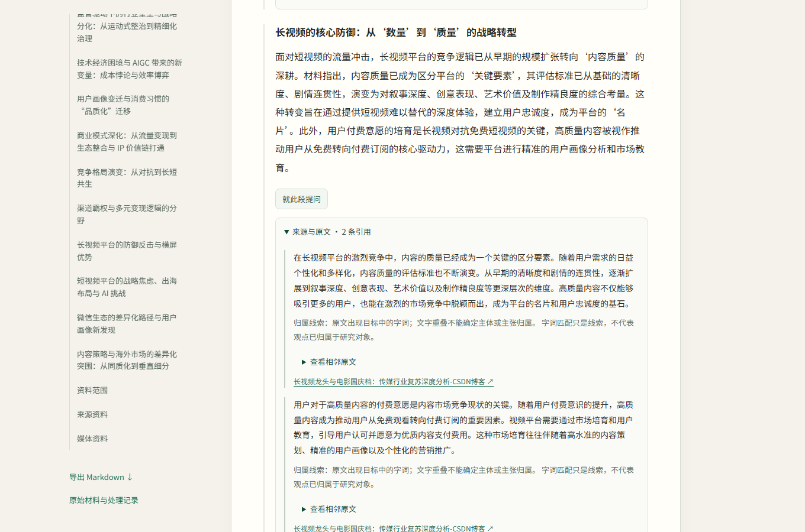

01
表与回看
模型容易沿最近读到的内容持续深入。我提出把出发点、方向、已有理解、依据与缺口留在外部，随材料更新；再结合整体问题与实际投入，决定下一段值得花在哪里。
研究主流 TCG 时，继续深入某个游戏可以很有价值；回看使系统同时判断其他重要对象是否还需要调查。
研究调度关系示意
原研究问题当前理解 / 依据 / 缺口
继续深入补查关系换一个对象
读取新材料 ↗ 更新记录 ↗ 回看投入
让研究留下材料，也留下理解。
从文本、文件、网页或自然语言研究目标出发，组织取材、阅读、报告与来源。我围绕小模型的错误前提、局部发散和材料取舍提出方法，再落实到可以继续提问和修订的工作区。

以长短视频竞争为目标，从分发、用户场景、内容供给与商业模式等角度组织材料。阅读时可以沿目录进入章节，再从具体段落回到原文与网页。
面对发散、错误前提和信息损失，我把下一步的依据留在系统外部，让取材、解释和修改有具体对象。
模型容易沿最近读到的内容持续深入。我提出把出发点、方向、已有理解、依据与缺口留在外部，随材料更新；再结合整体问题与实际投入，决定下一段值得花在哪里。
研究主流 TCG 时，继续深入某个游戏可以很有价值；回看使系统同时判断其他重要对象是否还需要调查。
来源中的一句评价，可以成为调查线索。形成结论时，仍要保留是谁、在什么对象与范围下作出的判断。我要求材料指向自身，再沿影响判断的缺口补查。
在当前报告里，段落可以展开到保存原文、网页出处和相邻语境，让后续判断有具体材料可回看。
材料中的判断，
保留自身的来路。
谁提出、针对什么对象、在什么时间与范围下成立？
原文、相邻语境与来源，继续参与解释和修订。
一段表达难以可靠转述时，我选择保留必要原文及上下文，让其他有依据的部分继续正常说明。程序按选定原地址取字，模型负责决定采用什么、为何采用。
验证时同时看解释有没有保住具体信息，修订有没有误改正确内容，以及整篇是否仍可阅读。
选择原地址 → 程序取字 → 与章节解释共同组织
流程设计需要工程支撑。长任务、保存结果与用户操作各自保留状态，使报告可以按版本读取、追问与修改。
时限、暂停、继续和检查点保存长任务的进展，控制更新后，旧回调遵守新的执行状态。
报告、编辑基准与问答绑定版本；并发编辑通过事务处理，后来的复核保留自己的对应关系。
目录、正文与过程按需读取，任务轮询使用轻量状态，工作区分别呈现已保存结果和当前任务。
Python / FastAPI / SQLite / HTML · CSS · JavaScript / llama.cpp / 兼容 API
从具体研究，继续看形成理解的方法